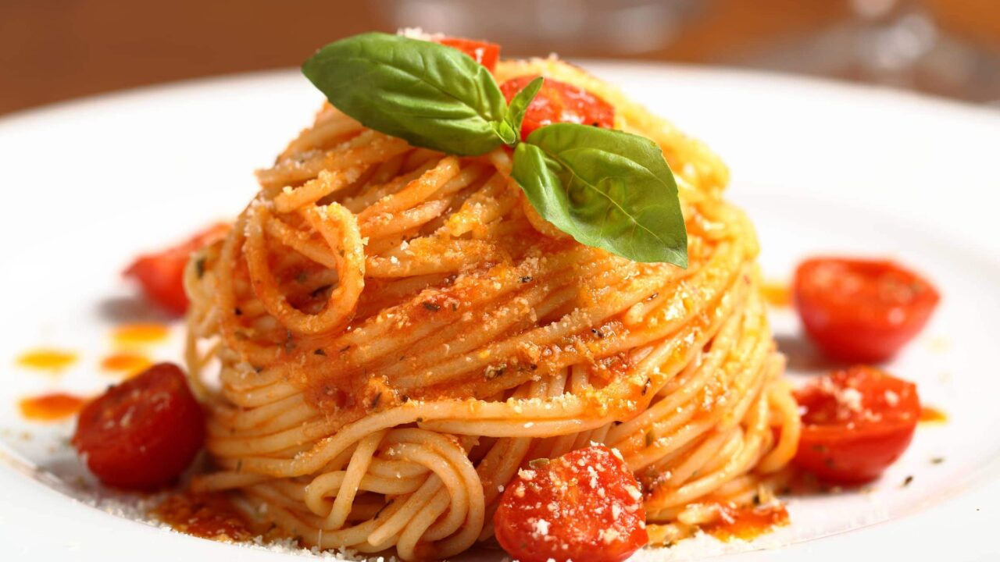

For more recipes
Pasta and Basta recipe:

Description
This recipe is about a milanese pasta, which I love very much and I very much enjoy the free time this recipe
gives me when I really need it.
We'll start with the
Igredients
- 300 grams of Pasta
- 300 grams of crushed tomatoes
- 200 grams of minced meat
- 150 grams of mozzarrela
The igredients are simple but it's steps are even simpler
Steps
- Boil the Pasta
- Bring a pot of salted water to a boil.
- Add the pasta and cook according to the package instructions until al dente.
- Drain and set aside.
- Prepare the Sauce
- In a pan over medium heat, cook the minced meat until browned.
- Add the crushed tomatoes and let it simmer for about 10 minutes, stirring occasionally.
- Season with salt and pepper to taste.
- Combine the Pasta and Sauce
- Add the cooked pasta to the pan with the sauce.
- Stir well to coat the pasta evenly with the sauce.
- Add the Mozzarella
- Tear or slice the mozzarella and mix it into the pasta while still warm.
- Let it melt slightly for a creamy texture.
- Serve and Enjoy
- Plate the pasta and optionally garnish with fresh basil or grated Parmesan.
- Enjoy your Pasta and Basta!